Previous
Previous
Unity has the next-generation Ageia PhysX physics engine built-in. This allows for unique emergent behaviour and is generally very cool.
Basics
To put an object under physics control, simply add a Rigidbody to it. When you do this, the object will be affected by gravity, and can collide with other objects in the world.
Rigidbody
Rigidbodies are the gateway for applying physics to your objects. The Rigidbody can receive forces and torque to make your objects move in a realistic way. Any GameObject must contain a Rigidbody to be influenced by gravity, act under added forces via scripting, or interact with other objects through the Ageia physX physics engine.
| 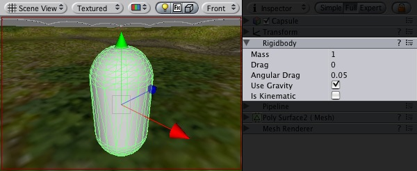 |
A GameObject with a Rigidbody component attached
Properties
| Property: | Function: |
|---|---|
| The weight of the object. Keep this below 1 for the best stability. | |
| How much air resistance affects the object when moving from forces. 0 means no air resistance, and infinity makes the object stop moving immediately. | |
| How much air resistance affects the object when rotating from torque. 0 means no air resistance, and infinity makes the object stop rotating immediately. | |
| If checked, the object is affected by gravity. | |
| If checked, the object will not be driven by the physics engine, but can only be manipulated by its Transform. This is useful for moving platforms or if you want to animate a Rigidbody that has a Hinge Joint attached. |
Details
Rigidbodies allow your GameObjects to act under control of the physics engine. This opens the gateway to realistic collisions, varied types of joints, and other very cool behaviors. Manipulating your objects by adding forces to a Rigidbody creates a very different feel and look than adjusting the Transform property directly. Generally, you shouldn't manipulate the Rigidbody and the Transform of the same object — just one or the other.
The biggest difference between manipulating the Transform or the Rigidbody is the use of forces. Rigidbodies can receive forces and torque, but Transforms cannot. Transforms can be translated and rotated, but this is not the same as using physics. You'll notice the distinct difference when adding you try it for yourself. Adding forces/torque to the Rigidbody will actually change the object's position and rotation of the Transform component. This is why you should only be using one or the other. Changing the Transform while using phyics could cause problems with collisions and other calculations.
Rigidbodies must be explicitly added to your game object before they will be affected by the physics engine. You can add a Rigidbody to your selected object from Components -> Dynamics -> Rigidbody. Now your object is physics-ready; it will fall under gravity and can receive forces via scripting, but you may want to add a Collider or a Joint to get it to behave exactly how you want.
Parenting
When an object is under physics control, it moves semi-independently of the way its transform parents move. If you move any parents, they will pull the Rigidbody child along with them. However, the Rigidbodies will still fall down due to gravity and react to collision detection.
Scripting
To control your Rigidbodies, you will primarily use scripts to add forces or torque. You do this by calling AddForce and AddTorque on the object's Rigidbody. Remember that you shouldn't be directly altering the object's Transform when you are using physics.
Animation
For some situations, mainly creating ragdoll effects, it is neccessary to switch control of the object between animations and physics. For this purpose Rigidbodies can be marked Kinematic. While the Rigidbody is marked Kinematic, it will not be affected by collisions, forces, or any other part of the physics engine. This means that you will have to control the object by manipulating the Transform component directly. Kinematic Rigidbodies will affect other objects, but they themselves will not be affected by physics. For example, Joints which are attached to Kinematic objects will constrain any other Rigidbodies attached to them and Kinematic Rigidbodies will affect other Rigidbodies through collisions.
Colliders
Colliders are another kind of component that must be added alongside the Rigidbody in order to allow collisions to occur. If two Rigidbodies bump into each other, the phyics engine will not calculate a collision unless both objects also have a Collider attached. Collider-less Rigidbodies will simply pass through each other during physics simulation.
| 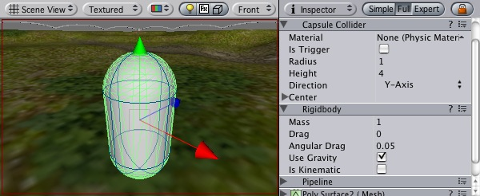 |
A Rigidbody with a Collider component attached
Add a collider with the Component -> Dynamics menu. View the Component page of any individual Collider for more specific information:
- Box Collider - primitive shape of a cube
- Sphere Collider - primitive shape of a sphere
- Capsule Collider - primitive shape of a capsule
- Mesh Collider - creates a collider from the object's mesh, cannot collide with another Mesh Collider
- Wheel Collider - specifically for creating cars or other moving vehicles
Compound colliders
Compound Colliders are combinations of primitive Colliders, all together acting as a single Collider. They come in handy when you have a complex mesh to use in collisions, but cannot use a Mesh Collider. To create a Compound Collider, create child objects of your colliding object, then add a primitive Collider to each child object. This allows you to position, rotate, and scale each Collider easily and independently of each other.
A GameObject with a Rigidbody and multiple colliders attached
In the above picture, the terrain has a Mesh Collider attached. Mesh Colliders work the best for terrain or environments made from irregular shapes. The Rigidbody has 3 child Colliders attached: capsule, cube and sphere. When Play mode begins, the Rigidbody falls due to gravity, and the 3 child Colliders fall with it. The 3 Collision primitives collide with the Mesh Collider, and the Rigidbody eventually balances and comes to rest on the 3 Colliders.
Keep in mind, Mesh Colliders can't collide with each other, so the typical solution is to use primitive Colliders for any objects that move, and Mesh Colliders for static background objects.
Use the right size
The size value of the your object's mesh is much more important than the mass of the Rigidbody. If you find that your Rigidbody is not behaving exactly how you expect; it moves slowly, 'floats', or doesn't collide correctly; consider adjusting the scale of your mesh and/or the Rigidbody's Transform. Unity's default unit scale is 1 unit = 1 meter, so the scale of your imported mesh is maintained, and applied to physics calculations. For example, a crumbling skyscraper is going to fall apart very differently than a tower made of toy blocks, so objects of different sizes should be modeled to accurate scale.
If you are modelling a human make sure he is around 2 meters big in Unity. To check if your object has the right size compare it to the default cube. You can create a cube using GameObject -> Create Other -> Cube. The cube will be exactly 1 meter large. So your human should be twice as tall.
If you aren't able to adjust the mesh itself, you can change the global scale of each particular mesh by control-clicking on your imported mesh and selecting 'Import Settings' from the context menu. Here, you can change the scale and re-import your mesh.
If your game requires that your GameObject needs to be instantiated at different scales, it is perfectly okay to directly adjust the values of your Transform's scale. The down-side is that the physics simulation must do more work at the time the object is instantiated, and could cause a performance drop in your game. This isn't a terrible loss, but it is not as efficient as finalizing your scale with the other two options.
Hints
- The relative masses of two objects determines how they react when they collide.
- Making one object have higher mass than another does not make it fall faster in free fall. Use drag for that.
- A low drag value makes an object seem heavy. A high one makes it seem light. Typical values for drag are between .001 (solid block of metal) and 10 (feather)
- If you are directly manipulating the Transform component of your object, don't attach a Rigidbody
Constant Force
The Constant Force component is a quick utility for adding constant forces to a rigidbody. This works great for one shot objects like rockets, if you don't want it to start with a large velocity but instead accelerate.
| 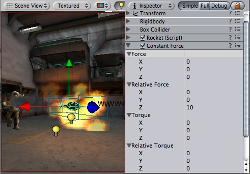 |
A rocket propelled forward by the constant force component
Properties
| Property: | Function: |
|---|---|
| The vector of a force to be applied in world space. | |
| The vector of a force to be applied in the objects local space. | |
| The vector of a torque, applied in world space. The object will begin spinning around this vector. The longer the vector is, the faster the rotation. | |
| The vector of a torque, applied in local space. The object will begin spinning around this vector. The longer the vector is, the faster the rotation. |
Details
To make a rocket that accelerates forward set the relative force to be along the positive z-axis. Then use the rigidbody's drag property to make it not exceed a some maximum velocity. (The higher the drag the lower the maximum velocity will be.) In the rigidbody also make sure to turn off gravity so that the rocket will always stay on it's path.
Hints
- To make an object flow upwards, add a constant force with the Force property having a positive Y value.
- To make an object fly forwards, add a constant force with the Relative Force property having a positive Z value.
Sphere Collider
The Sphere Collider is a basic sphere-shaped collision primitive.
| 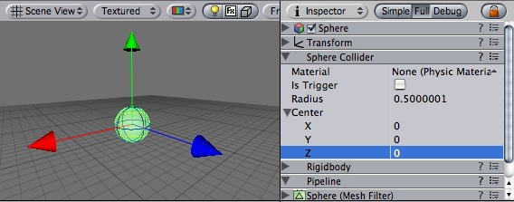 |
(Image of a Sphere Collider in Inspector)
Properties
| Property: | Function: |
|---|---|
| Reference to the PhysicMaterial that determines how this Collider interacts with others. | |
| If enabled, this Collider is used for triggering events, and is ignored by the physics engine. | |
| The size of the collider. | |
| The position of the collider in the object's local space. |
Details
The Sphere Collider can be resized to uniform scale, but not along individual axes. It works great for falling boulders, ping pong balls, marbles, etc.
 |
A standard Sphere Collider
Colliders work with Rigidbodies to bring physics in Unity to life. Whereas Rigidbodies allow objects to be controlled by physics, Colliders allow objects to collide with each other. Colliders must be added to objects independently of Rigidbodies. A Collider does not necessarily need a Rigidbody attached, but a Rigidbody must be attached in order for the object to react to collisions.
When a collision between two Colliders occurs and if at least one of them has a Rigidbody attached, three collision messages are sent out to the objects attached to them. These events can be handled in scripting, and allow you to create unique behaviors with or without making use of the built-in Ageia physX engine.
Triggers
An alternative way of using Colliders is to mark them as a Trigger, just check the IsTrigger property checkbox in the Inspector. Triggers are effectively ignored by the physics engine, and have a unique set of three trigger messages that are sent out when a collision with a Trigger occurs. Triggers are useful for triggering other events in your game, like cutscenes, automatic door opening, displaying tutorial messages, etc. Use your imagination!
Be aware that in order for two Triggers to send out trigger events when they collide, one of them must be attached to a Rigidbody. For a Trigger to collide with a normal Collider, one of them must have a Rigidbody attached. For a detailed chart of different types of collisions, see the collision action matrix in the Advanced section below.
Compound Colliders
Compound Colliders are combinations of primitive Colliders, all together acting as a single Collider. They come in handy when you have a complex mesh to use in collisions, but cannot use a Mesh Collider. To create a Compound Collider, create child objects of your colliding object, then add a primitive Collider to each child object. This allows you to position, rotate, and scale each Collider easily and independently of each other.
A GameObject with a Rigidbody and multiple colliders attached
In the above picture, the terrain has a Mesh Collider attached. Mesh Colliders work the best for terrain or environments made from irregular shapes. The Rigidbody has 3 child Colliders attached: capsule, cube and sphere. When Play mode begins, the Rigidbody falls due to gravity, and the 3 child Colliders fall with it. The 3 Collision primitives collide with the Mesh Collider, and the Rigidbody eventually balances and comes to rest on the 3 Colliders.
Keep in mind, Mesh Colliders can't collide with each other, so the typical solution is to use primitive Colliders for any objects that move, and Mesh Colliders for static background objects.
Hints
- To add multiple Colliders for an object, create child objects and attach a Collider to each one. This allows each Collider to be manipulated independently.
- You can look at the gizmos in the Scene view to see how the Collider is being calculated on your object.
- Colliders do their best to match the scale of an object. If you have a non-uniform scale (a scale which is different in each direction), only the Mesh Collider can match completely.
- If you make an explosion, it can be very effective to add a rigidbody with lots of drag and a sphere collider to it in order to push it out a bit from the wall it hits.
Box Collider
The Box Collider is a basic cube-shaped collision primitive.
| 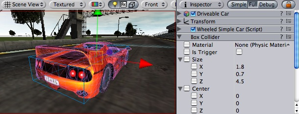 |
Box collider here is used to approximate car's hull
Properties
| Property: | Function: |
|---|---|
| The size of the collider in the X, Y, Z directions. | |
| The position of the collider in the object's local space. |
Details
The Box Collider can be resized into different shapes of rectangular prisms. It works great for doors, walls, platforms, etc. It is also effective as a human torso in a ragdoll or car hull in a vehicle. Of course, it works perfectly for just boxes and crates as well!
 |
A standard Box Collider
Compound Colliders
Hints
Mesh Collider
The Mesh Collider takes a Mesh Asset and builds its Collider based on that mesh. It is far more accurate for collision detection than using primitives for complicated meshes, but it cannot collide with other Mesh Colliders.
| 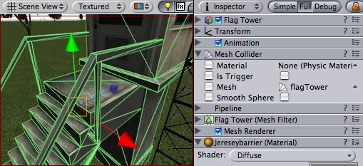 |
A Mesh Collider used on the flag tower object
Properties
| Property: | Function: |
|---|---|
| Reference to the Mesh to use for collisions. | |
| When this is enabled, collision mesh normals are smoothed. You should enable this on smooth surfaces eg. rolling terrain without hard edges to make sphere rolling smoother. |
Details
The Mesh Collider builds its collision representation from the Mesh attached to the GameObject, and reads the properties of the attached Transform to set its position and scale correctly.
Hints
- Mesh Colliders cannot collide with each other. Therefore, they are most useful for background objects like environment geometry.
- It is usually better to use primitive Colliders for objects under physics control.
- When you attach a Mesh Collider to a Game Object, its Mesh property will default to the mesh being rendered. You can change that by assigning a different Mesh.
Physic Material
The physics material contain all info needed to tune friction and bouncing effects of colliding objects.
To create a physic material select the menu Assets -> Create -> Physic Material. Then drag the physic material from the project pane on a collider in the scene.
| 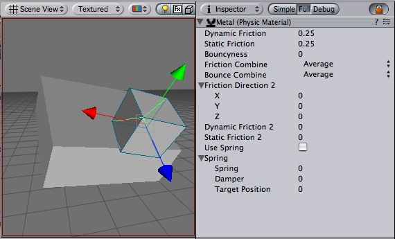 |
The Physic Material
Properties
| Property: | Function: |
|---|---|
| The friction used when an object is lying on a surface. Usually a value from 0 to 1. | |
| The friction used when already moving. Usually a value from 0 to 1. | |
| How bouncy is the surface? A value of 0 will not bounce. A value of 1 will bounce without any loss of energy. | |
| How the friction of two colliding objects is combined. | |
| The two friction values are averaged. | |
| The smallest of the two values is used. | |
| The largest of the two values is used. | |
| The friction values are multiplied with each other. | |
| How the bouncyness of two colliding objects is combined. | |
| The two values are averaged. | |
| The smallest of the two values is used. | |
| The largest of the two values is used. | |
| The values are multiplied with each other. | |
| The direction of anisotropy. Anisotropic friction is enabled if the vector3 is not zero. Dynamic Friction 2 and Static Friction 2 will be applied along Friction Direction 2. | |
| If anisotropic friction is enabled, dynamicFriction2 will be applied along Friction Direction 2. | |
| If anisotropic friction is enabled, staticFriction2 will be applied along Friction Direction 2. | |
| If anisotropic friction is enabled, staticFriction2 will be applied along Friction Direction 2. | |
| If use Spring is checked, surface will be springy. | |
| The spring of the surface | |
| The spring coefficient. A high value will pull the surfaces towards the rest position faster. | |
| The damper coefficient. A high value will dampen the relative movement of the two surfaces. | |
| The rest position of the spring. |
Details
Friction is the quantity which prevents surfaces from sliding off each other. This value is critical when trying to stack objects. Friction comes in two forms, dynamic and static. Static friction is used when the object is lying still. It will prevent the object from starting to move. If a large enough force is applied to the object it will start moving. At this point dynamic friction will come into play. Dynamic friction will now attempt to slow down the object while in contact with another.
Hints
- Don't try to use a standard physic material for the main character. Make a customized one and get it perfect.
Hinge Joint
The Hinge Joint groups together 2 Rigidbodies, constraining them to move like they are connected by a hinge. It is perfect for doors, but can also be used to model chains, pendulums, etc.
| 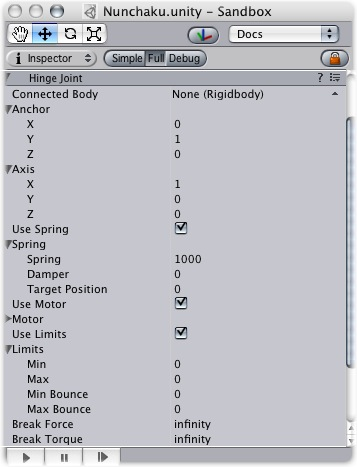 |
The Hinge Joint
Properties
| Property: | Function: |
|---|---|
| Optional reference to the Rigidbody that the joint is dependent upon. If not set, the joint connects to the world. | |
| The Position of the anchor around which the body swings. The Position is defined in local space. | |
| The Direction of the axis around which the body swings. The Axis is defined in local space. | |
| Spring makes the rigid body attempt to stay in a specific angle compared to its connected body. | |
| The force the object asserts to move into the position. | |
| the higher this value, the more the object will slow down. | |
| Target angle of the spring. The spring pulls towards this angle measured in degrees. | |
| The motor makes the object spin around. | |
| The speed the object tries to attain. | |
| The force applied in order to attain the speed. | |
| If enabled, the motor is never used to brake the spinning, only accelerate it. | |
| If enabled, the angle of the hinge will be restricted within the Min & Max values. | |
| The lowest angle the rotation can go. | |
| The highest angle the rotation can go. | |
| How much the object bounces when it hits the minimum stop. | |
| How much the object bounces when it hits the maximum stop. | |
| The force that needs to be applied for this joint to break. | |
| The torque that needs to be applied for this joint to break. |
Details
A single Hinge Joint should be applied to an object per desired hinge. The hinge will rotate at the point specified by the Anchor property, moving around the specified Axis property. You DO NOT need to assign a Game Object to the joint's Connected Body property. You should only assign a Game Object to the Connected Body property if you want the joint's Transform to be dependent on the attached object's Transform.
Think about how the hinge of a door works. The Axis in this case is up, positive along the Y axis. The Anchor is placed somewhere at the intersection between door and wall. You would not need to assign the wall to the Connected Body, because the joint will be connected to the world by default.
| 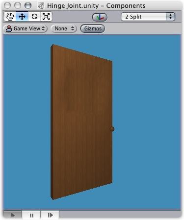 |
A practical Hinge Joint with no Connected Body
Now think about a doggy door hinge. The doggy door's Axis would be sideways, positive along the relative X axis. The main door should be assigned as the Connected Body, so the doggy door's hinge is dependent on the main door's Transform.
| 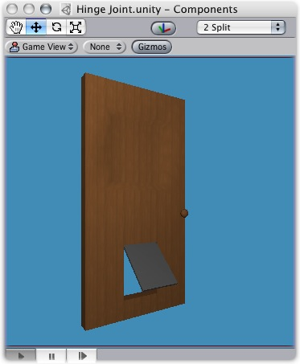 |
A practical Hinge Joint with a proper Connected Body
Chains
Multiple Hinge Joints can also be strung together to create a chain. Add a joint to each link in the chain, and attach the next link as a Connected Body. The result should be similar to the following picture.
| 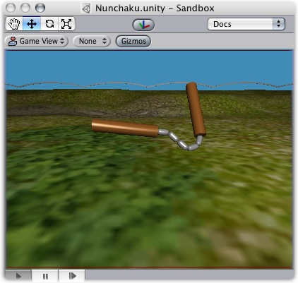 |
A Nunchaku made exclusively with primitives and Hinge Joints
Vehicles
Hinge Joints can be implemented as axles on vehicles, as seen here in Forest Johnson's racing game. However, it's often better just to use a Wheel Collider for vehicles.
| 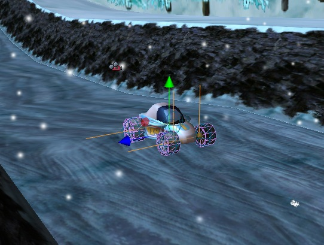 |
Hints
- You do not need to assign a Connected Body to your joint for it to work.
- Use Break Force in order to make dynamic damage systems. This is really cool as it allows the player to break a door off its hinge by blasting it with a rocket launcher or running into it with a car.
- The Spring, Motor, and Limits properties allow you to fine-tune your joint's behaviors.